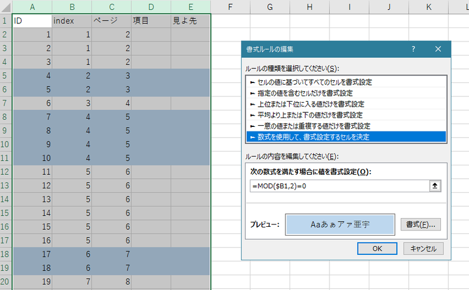
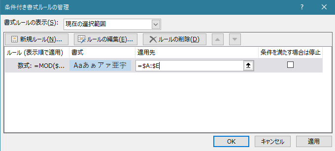

事前準備ツール
索引拾いのテンプレート生成
| ID | index | ページ | 項目 | 見よ先 |
|---|---|---|---|---|
| {{ line.id }} | {{ line.pageIdx }} | {{ line.page }} |
個数列：見よ項目がある場合、見よ先項目とのペアで1つとカウント
条件付き書式の設定
index列に条件付き書式で偶数の場合に背景色変更という設定をするとページの変わり目が見やすくなり便利です。

入力テンプレートの事前整形
- 項目を左列に、ページを右列に配置
見よ先が入力されている場合：→でつないで見よ項目を作成- ノンブルを削除
- 代わりに同じノンブルで見よ先項目を作成
| 項目 | ノンブル |
|---|---|
| {{item.name}} | {{item.nombre}} |